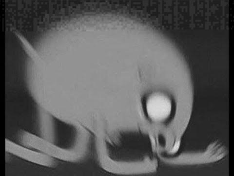

JPEG Steganography using SVD and Adaptive QIM
Winkelware - Published on October 25, 2026
About the Steganography Project
The full project with all code, readme, and report can be found here: SVDAdaptiveQim-StegoProj
Throughout the course of my Master's studies, I took a class dedicated to Steganography and the various forms that it can take.
Lots of time was dedicated to image steganography, specifically JPEGs.
The popular F5 algorithm for stegging JPEG images was discussed at length, so when the time came to begin the semester project, JPEG steganography algorithms were fresh on my mind.
The deliverables for the semester project were a working implementation of an academically proposed stego algorithm and a report detailing its effectiveness.

For this project I created a Python implementation of of Jing Liu et. al's work Robust JPEG Image Steganography Using Wavelet Domain SVD and Adaptive QIM. The aim of their algorithm was to produce a robust steganography algorithm that can persist through further JPEG compression and distortion. Robustness was the primary goal, not necessarily perfect extraction. The main, general concept of the algorithm revolves around performing mathematical transforms and matrix math to isolate certain values that can hold a bit parity. This parity can be rediscovered (to a reasonable extent anyway) through the same operations at extraction. These values are expected to reasonably hold their value/parity after further compression.
The implementation that I created is not exactly 1-to-1 with the creator's algorithm as defined in their work. Time constraints of the semester and the complexity of programming certain protions led to me having to cut some features the authors outlined. Within the linked Github repo, my entire Python implementation can be found alongside a readme detailing use of the program, and a PDF report detailing our analysis of the proposed algorithm.
I do not own any of the images used for testing, nor do I claim that they are mine at any point.